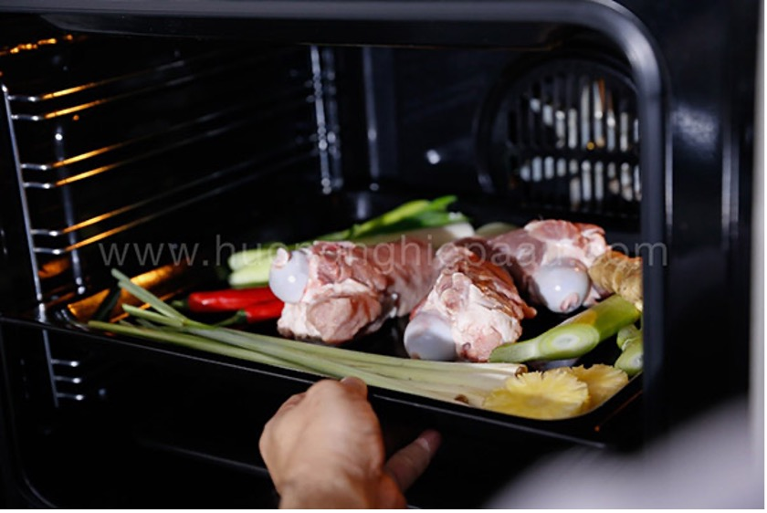
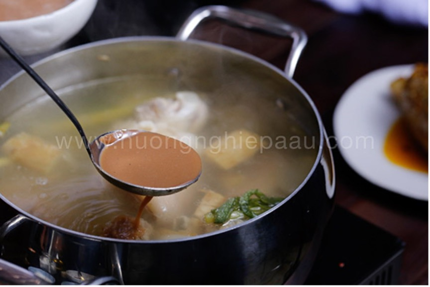
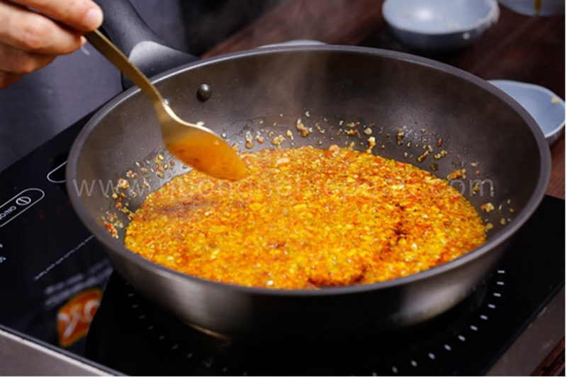

Ingredients
- 2 kg pork bone (bone marrow)
- 700g beef brisket
- 700g pork hock (it’s best to choose the hock first)
- 10 stalks of lemongrass
- 100g minced lemongrass, garlic, and ground chili (each)
- 100g green chili
- 200g onion
- 100g ginger
- 1 ripe pineapple
- 20 Hue-style meatloafs (chả lá Huế)
- 200g shallots or spring onions, and cilantro (all finely chopped)
- Water spinach stems, banana blossom
- Fresh Vietnamese rice vermicelli noodles (bún bò tươi)
- Seasonings for cooking Hue-style beef noodle soup: Hue shrimp paste (mắm ruốc Huế Bà Duệ), annatto oil, fish sauce, rock sugar, salt, and cooking oil.
Instructions
Prepare the Ingredients:
- Wash the pork bones thoroughly, drain the water, then place them in the oven with 2 stalks of smashed lemongrass, smashed fresh ginger, onion, pineapple, and red chili. Roast them for about 30 minutes.

- Tie the beef brisket and pork hock tightly with string or thin strips. Make sure to tie it securely.
- Then, add some lemongrass stalks and onion to a pot of boiling water, briefly blanch the beef brisket and pork hock, then remove them and place them into a bowl of ice water.
- Next, add the roasted pork bones to the boiling water, briefly blanch them, and then transfer them to the ice water as well. Remove and let them drain.
Prepare the Broth:
- Add the ingredients for the Hue-style beef noodle soup, including onion, smashed ginger, sliced pineapple, green chili, and lemongrass stalks into the pot of water. Once the water boils, add the beef brisket, pork hock, and pork bones, then skim off the scum. Reduce the heat and simmer until the beef brisket and pork hock are cooked. Afterward, remove the beef brisket and pork hock.
- Next, discard the onion, lemongrass, ginger, and pineapple from the broth. Add more boiling water to replace the amount of water lost during the simmering.
- At this point, bring the broth to a boil again and season with ½ tablespoon of salt, 2 tablespoons of rock sugar, 3 tablespoons of fish sauce, and 80g of shrimp paste (dissolved in the broth). Stir well and adjust the seasoning to your taste.

Prepare Chili Oil (Ot sa te):
- Add 1 tablespoon of cooking oil to a hot pan, then add green onions, cilantro, shallots, garlic, and minced lemongrass to sauté until fragrant. Add the ground chili and 1 tablespoon of annatto oil, and mix well.
- Scoop half of this mixture into a bowl. The remaining half will be stir-fried briefly with the beef brisket until fragrant.

Serve and Enjoy!
- Thinly slice the banana blossom and water spinach stems.
- Slice the beef brisket and pork hock thinly. Slice the Hue-style meatloaf or leave it whole if you prefer.
- Briefly blanch the rice vermicelli in boiling water, then place the desired amount of noodles into a bowl. Arrange the beef brisket, pork hock, and meatloaf on top.
- Pour the broth over it, sprinkle some chopped green onions on top, and don't forget to enjoy with the banana blossom, water spinach stems, and chili oil.